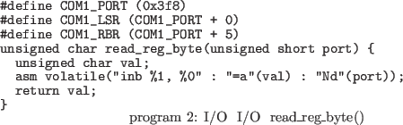
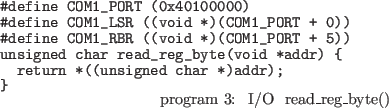

各デバイスのハードウェアレジスタの読み書き(デ バイスへのI/O)はどのように実現されているので しょうか。ここの方法として、I/OマップドI/Oとメ モリマップドI/Oの二種類の方式があり、通常アー キテクチャごとにどちらかの方式をとります。しか し、x86アーキテクチャでは、歴史的な事情により両 方式を併用しています。 I/OマップドI/Oでは、メモリ空間とは独立した デバイス専用のアドレス空間(I/O空間)が存在して おり、ここに各デバイスのハードウェアレジスタを 割り付けます。なお、どのデバイスをどの番地にす るかは、固定的に決まっているアーキテクチャと動 的に決まるアーキテクチャとがあります。 I/O空間へ は専用の命令(IN命令、 OUT命令)を用いてアクセス を行います。前述のシリアルポートの受信処理の read_reg_byte()関数及びレジスタの宣言はリスト2 のようになります。

一方、メモリマップドI/Oでは、各デバイスの ハードウェアレジスタをメモリ空間の一部に割り付 けます。こちらも、どのデバイスをどの番地にする かは、固定的に決まっているものと動的に決まるも のとがあります。ハードウェアレジスタへのアクセ スにはMOV命令など通常のメモリアクセスと同様 の手順を用います。前述のシリアルポートの受信処 理のread_reg_byte()関数及びレジスタの宣言はリス ト3のようになります。

ゲストマシン上で各種デバイスをサポートするに は、この2つの種類のI/Oを仮想化し、アクセスさ れたデバイスに応じたエミュレーション処理を行う 必要があります。